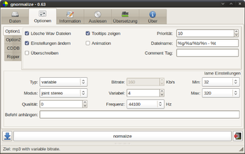

gnormalize
Dieser Artikel wurde für die folgenden Ubuntu-Versionen getestet:
Ubuntu 16.04 Xenial Xerus
Ubuntu 14.04 Trusty Tahr
Zum Verständnis dieses Artikels sind folgende Seiten hilfreich:
gnormalize  ist eine Art "Schweizer Taschenmesser" für Audiodateien. Das Programm extrahiert Audio-CDs, gleicht die Lautstärke an (Normalisierung) und kann zwischen den Formaten MP3, MP4, MPC, OGG, APE, FLAC und WAV konvertieren. gnormalize verwendet zum Extrahieren der CDs cdparanoia.
ist eine Art "Schweizer Taschenmesser" für Audiodateien. Das Programm extrahiert Audio-CDs, gleicht die Lautstärke an (Normalisierung) und kann zwischen den Formaten MP3, MP4, MPC, OGG, APE, FLAC und WAV konvertieren. gnormalize verwendet zum Extrahieren der CDs cdparanoia.
Parameter zum Auslesen und Kodieren lassen sich auf vielfältige Art und Weise direkt über die Oberfläche beeinflussen. Des Weiteren unterstützt das Programm CD-Abfragen per FreeDB. Hauptvorteile sind die Bereitstellung aller wichtiger Funktionen unter einer einheitlichen Oberfläche und die umfangreichen Einstellmöglichkeiten.
Installation¶
|  |
| gnormalize |
gnormalize ist nicht in den offiziellen Paketquellen enthalten. Man muss daher auf ein Fremdpaket ausweichen oder das Programm aus dem über die Projektseite erhältlichen Quellcode selbst kompilieren [1].
Fremdquelle¶
GetDeb bietet eine Fremdquelle [2] an: Fremdpakete
Hinweis!
Zusätzliche Fremdquellen können das System gefährden.
Programm erweitern¶
Um den vollen Funktionsumfang von gnormalize nutzen zu können, kann man noch zusätzliche Pakete installieren. Beim Programmstart wird angezeigt, welche Pakete für bestimmte Funktionen evtl. noch fehlen, so dass man diese bei Bedarf leicht nachinstallieren kann. Dies wären beispielsweise die folgenden Pakete:
mpg321 (universe, siehe mpg123)
faac (multiverse)
faad (universe)
lame (universe, MP3-Encoder, siehe LAME)
flac (siehe FLAC)
 mit apturl
mit apturl
Paketliste zum Kopieren:
sudo apt-get install mpg321 faac faad lame flac
sudo aptitude install mpg321 faac faad lame flac
Anwendung¶
CDs auslesen¶
Eine Audio-CD mit gnormalize auszulesen ist, nach einigen Grundeinstellungen, sehr einfach und komfortabel. Zuerst sollte man unter dem Reiter "Daten" ein Zielverzeichnis angeben, etwa ~/Musik. Hier lässt sich auch das gewünschte Dateiformat auswählen.
Falls bestimmte Formate ausgegraut sind, fehlen die entsprechenden Pakete. Unter "Optionen" kann man u.a. mit dem "Dateinamen" das Namensformat inklusive Ordnerstruktur festlegen. Bei Verwendung von
%g/%a/%b/%n - %t
werden die Titel als ~/Musik/Genre/Interpret/Albumname/Nr - Titel.mp3 gespeichert. Dies ist sehr praktisch, da es späteres Umkopieren bzw. Umbenennen unnötig macht. Die zur Verfügung stehenden Platzhalter für das Namensformat kann man sich über Tooltipps anzeigen lassen.
Setzt man ein Häkchen vor "Einstellungen ändern", lassen sich die Einstellungen für das gewählte Dateiformat detailliert einstellen. Für das MP3-Format empfehlen sich folgende Werte:
Typ - Variable Modus - Joint Stereo Qualität - 0 Variabel - 4 Min: 32 Max: 320
Unter "Optionen/Ripper" lassen sich verschiedene Einstellungen zum Auslesevorgang setzen, z.b. Fehlerkorrekturverhalten und Ähnliches. Anschließend wechselt man in den Reiter "Auslesen" und klickt auf die Schaltfläche "Aktualisieren" neben der Laufwerksbezeichnung. Dadurch wird der Inhalt der aktuell eingelegten Musik-CD eingelesen. Bei bestehender Internetverbindung werden Albuminformationen automatisch eingetragen, ansonsten lässt sich dies auch über den Reiter "Information" manuell bewerkstelligen.
Den Auslesevorgang kann man anschließend mit "normalize" starten.
Dateien konvertieren¶
Möchte man mehrere Dateien auf ein Mal in ein anderes Format konvertieren, so bietet gnormalize auch hierfür eine komfortabel zu nutzende Möglichkeit. Hierzu wählt man unter "Daten" einfach ein Zielformat und das Quellverzeichnis aus und gibt an, ob der Ordner rekursiv durchsucht werden soll, passt ggf. noch das Zielverzeichnis an und startet den Vorgang mit "normalize".
Problembehebung¶
Deutsche Sprachdatei¶
Eine zur Zeit etwa zu 98% vollständige deutsche Sprachdatei lässt sich als Deutsch.tar.gz  herunterladen. Die im Archiv enthaltene Datei Deutsch.txt entpacken und in den Ordner ~/.config/gnormalize/language kopieren. Anschließend unter "Übersetzung" die Vorgabesprache auf "Deutsch" umstellen. Nach einem Neustart wird die Sprachdatei verwendet.
herunterladen. Die im Archiv enthaltene Datei Deutsch.txt entpacken und in den Ordner ~/.config/gnormalize/language kopieren. Anschließend unter "Übersetzung" die Vorgabesprache auf "Deutsch" umstellen. Nach einem Neustart wird die Sprachdatei verwendet.
Auslesen beschleunigen¶
Um den Auslesevorgang zu beschleunigen, kann man unter "Optionen -> Ripper" den Eintrag "Paranoia abschalten" aktivieren. Die CD wird dann ohne Korrekturfunktionen ausgelesen, was die Auslesezeit zu Lasten der Genauigkeit drastisch verkürzt.
Links¶
Normalisieren - Hintergrundinformationen
Audio in Form bringen mit gnormalize
 - heise Open Source, 10/2012
- heise Open Source, 10/2012Rarewares Debian Reposority
- bietet u.a. Pakete für Monkey's AudioAudioHQ-Forum
- Expertenforum mit vielen Informationen zu digitalen MusikformatenCDs rippen
 Übersichtsartikel
Übersichtsartikel
- Erstellt mit Inyoka
-
 2004 – 2017 ubuntuusers.de • Einige Rechte vorbehalten
2004 – 2017 ubuntuusers.de • Einige Rechte vorbehalten
Lizenz • Kontakt • Datenschutz • Impressum • Serverstatus -
Serverhousing gespendet von